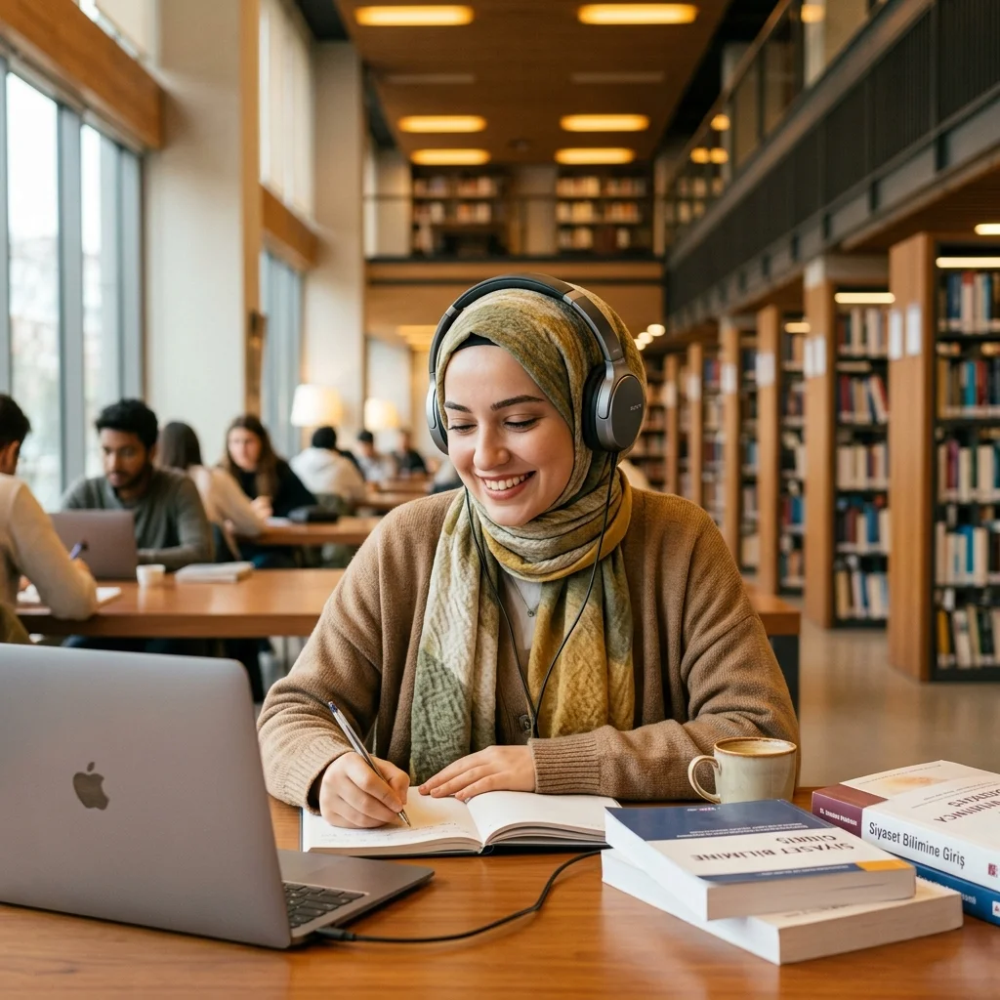

Erişilebilir, kapsayıcı ve hak temelli bir yaşam için hayata geçirdiğimiz tüm çalışmalar ve projelerimiz.

Görme engelli bireylerin bilgiye ve edebi eserlere erişimini kolaylaştırmak amacıyla yürüttüğümüz "Sesli Kitap Kütüphanesi", tamamen gönüllülerin desteğiyle büyüyen dijital bir okuma platformudur. Özellikle eğitim çağındaki görme engelli öğrencilerimiz için ders kitapları, kaynak yayınlar ve dünya klasiklerinin seslendirilmesi hedeflenmektedir.
Erişilebilir eğitim hakkına inanıyoruz. Kitapların seslendirilme aşamasında, stüdyo kalitesinde ses kayıt yazılımları ve uluslararası sesli kitap standartları takip edilerek, dinleyiciler için en rahat dinleme deneyimi sunulmaktadır. Hazırlanan ses dosyaları, derneğimizin dijital kütüphanesinde arşivlenerek sadece görme engelli üyelerimizin erişimine ücretsiz olarak açılmaktadır.
"Kitapların sesi olmak, bir bireyin dünyayı algılama biçimine dokunmaktır. Gönüllü okuyucularımızın her bir kelimesi, bir görme engelli gencimizin eğitimine ışık tutuyor."
Sesli kitap kütüphanemize katkıda bulunmak oldukça kolaydır. Gönüllü okuyucu olmak için aşağıdaki adımları takip edebilirsiniz:
Daha fazla kitabın seslendirilmesi ve kütüphanemizin teknolojik altyapısının geliştirilmesi için bilgisayar, kaliteli mikrofon ve stüdyo ekipmanı bağışlarınızı kabul ediyoruz. Bu projeye vereceğiniz her destek, daha fazla engelli bireyin eğitimde fırsat eşitliğine ulaşmasını sağlayacaktır.